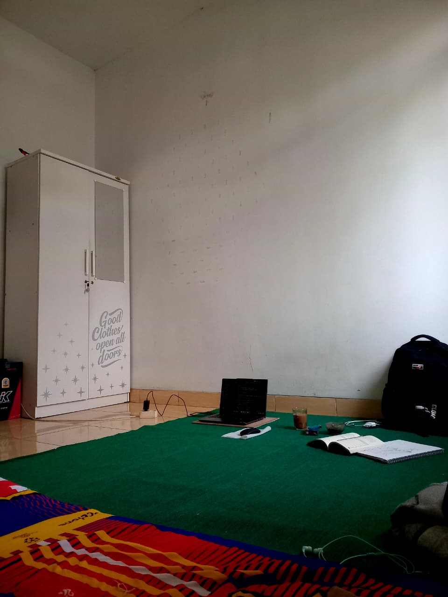
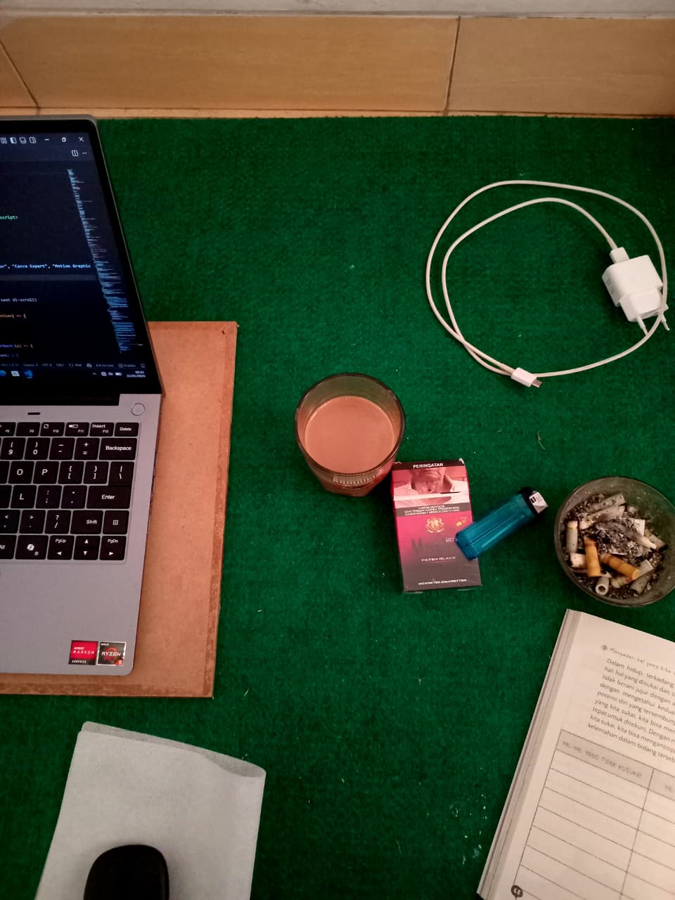
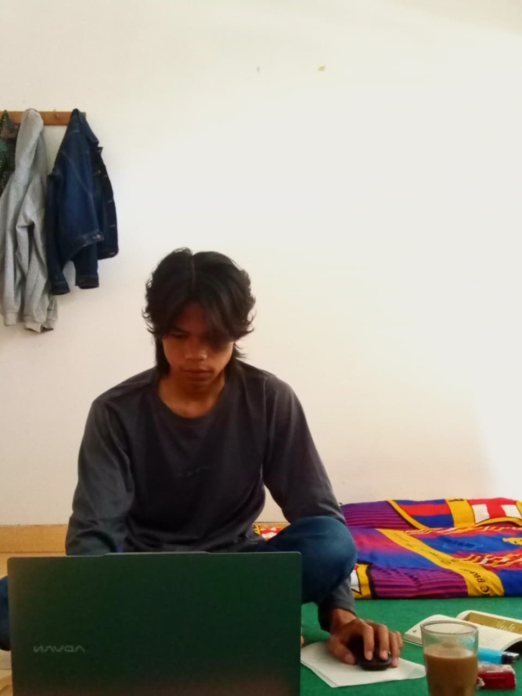
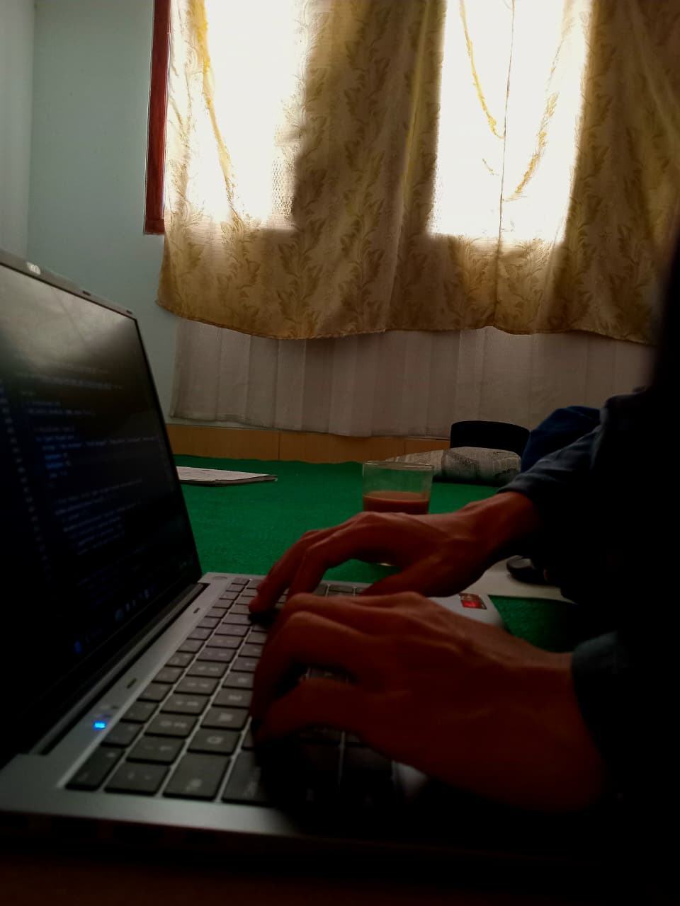
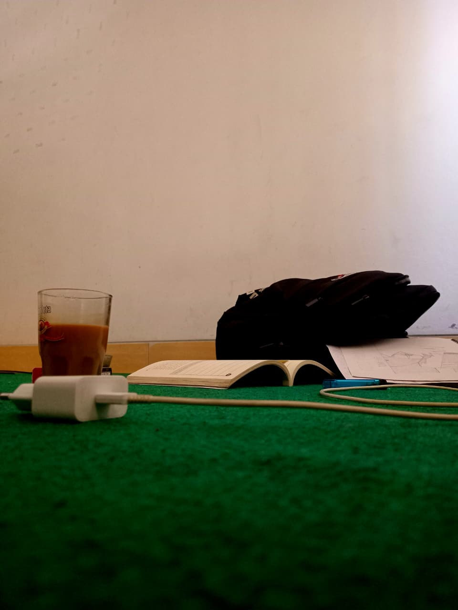
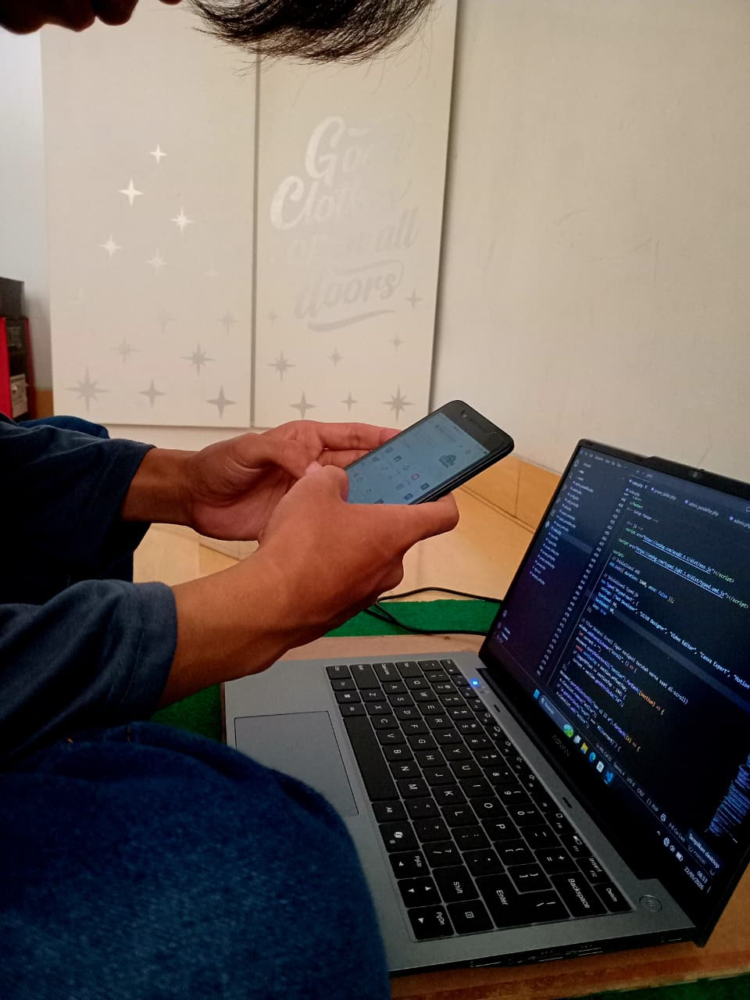
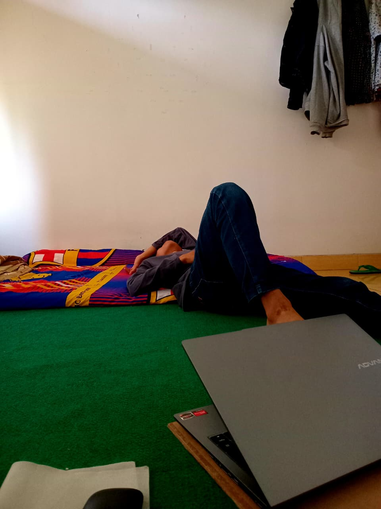

UTS Visual Storytelling
Tema: Manusia dan Ruang ("Di Balik Layar Monitor")

1. Establishing ShotSebuah ruang terbatas berukuran 3x3 meter dengan segala ketidakteraturannya, tempat di mana ribuan baris logika dan ekosistem digital dibangun secara sunyi setiap harinya.
 2. Relationship
2. Relationship
Interaksi intim antara manusia dan teknologi; sebuah hubungan fokus yang menghabiskan waktu berjam-jam demi memecahkan satu masalah abstrak di depan layar.

3. DetailSaksi bisu malam-malam panjang: asupan kafein yang mendingin dan tumpukan perangkat keras yang setia menemani proses berpikir.

4. PortraitDi balik setiap baris aplikasi yang berjalan lancar, ada dahi yang berkerut dan proses analisis mendalam untuk mencari jalan keluar dari sebuah error.

5. Gesture / ActionJemari yang bergerak taktis, menyusun sintaks demi sintaks, menerjemahkan ide abstrak manusia menjadi bahasa logika yang dipahami mesin.

6. Detail TambahanKetidakteraturan yang terorganisir; di antara tumpukan barang bawaan kuliah dan ruang yang sempit, fokus pikiran tetap terjaga tanpa terdistraksi dunia luar.

7. Action TambahanMenembus kebuntuan logika; gawai di tangan menjadi jendela kedua untuk menjelajahi dokumentasi dan mencari baris solusi yang hilang di tengah rumitnya sintaksis.

8. Close-up / Sign-offResolusi akhir; ketika kode program berhasil dieksekusi tanpa error, layar laptop perlahan ditutup, menandakan satu babak perjuangan digital hari ini telah tuntas.